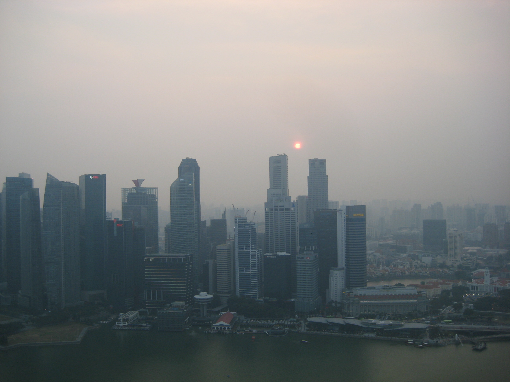

Nu er det snart jeres tur!
Lidt nervøs måske?
Frygt ej! Denne hjemmeside er lavet for at guide dig
Singapore som GCP-destination
Singapore er jo egentlig både en ø, et land og en by i ét. Singapore har præcis som Danmark lidt over 5,5 millioner indbyggere,
men hvor vi er spredt over et areal på 43.000 kvadratkilometer, så er Singapores indbyggere begrænset til 715 kvadratkilometer,
hvilket ca. svarer til størrelsen på Bornholm. Dette gør Singapore til det mindste land i Asien, og ses som en mikrostat.
Men på den anden side gør det egentlig bare lettere at komme godt omkring på øen, hvilket i kommer til at nyde når man får 'fri leg' til at gå rundt.
Ved første øjekast vil i nok lægge mærke til de mange skilte med bøder, i lufthavnen, metroen og på gå-gaden. Man må ikk
og hvad bøden er hvis den overtrædes. Vi havde godt hørt om det der med, at man ikke må spytte tyggegummi ud på gaden,
men nej, det er endnu værre. Du må ikke engang tygge tyggegummi. Faktisk bliver det betragtet som at smugle, hvis du bliver taget med en tyggegummipakke i lufthavnen.
Du kan også få en bøde for at køre på skateboard eller smide et stykke papir på jorden - eller sågar for at stille dig op og holde en offentlig tale.
Antallet af underlige love, der er sat ind for at gøre Singapore til en fin by, er uendeligt, men til gengæld fungerer alt, og byen er tæt på at være det sikreste sted i verden.
Der er næsten ingen kriminalitet, idet lemfældig omgang med loven straffes hårdt, enten med bøder, stokkeslag eller fængsel, og når det kommer til våben og narkotika snakker vi dødsstraf.
Ingen nåde. Af med knoppen!
GCP-film
Rejsen til Singapore er ikke ren leg - det er det dog 95% af tiden, men der skal jo også laves en GCP-film,
så vores kære Anders Schultz kan klappe i sine hænder på den store GCP-dag... Men hvordan skal sådan en lige laves?
Nedestående video er min gruppes film, feel free til at bruge den som inspiration eller blot at få en ide om hvad Singapore er for en størrelse.